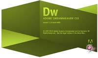

Ztylo - Diseño Gráfico
Dreamweaver CS5 y las nuevas Tendencias

Ya desde el 12 de Abril de este año, conocimos los nuevos productos de Adobe a pequeños rasgos, hoy hablaremos de las nuevas características del Adobe Dreamweaver CS5. Algunas de ellas son:
Es compatible con las últimas tecnologías web, como lo son: Javascript, CSS, AJAX, XHTML, Adobe AIR, frameworks Javascript (Por ejemplo JQuery).
Integra la tecnología Live View, en que por medio de una aplicación online llamada Adobe BrowserLab podrás probar tu diseño web en distintos navegadores.
Tiene un excelente soporte e integración para trabajar con CMS como WordPress, Joomla y Drupal.
Te ayuda a mejorar la sintaxis de tu código.
Como añadido podemos decir que es compatible con Windows XP, Vista y 7, y al parecer sigue necesitando los mismo requerimientos de su antecesor, es decir 512 MB de RAM y por lo menos 1 GB de procesador para poder ejecutarse medianamente normal.
En primer lugar, los usuarios noveles se encontrarán con unos asistentes mejorados y simplificados, para ahorrar confusiones. Además, se incluyen instrucciones de cómo usar eficientemente el layout predefinido de una página web para que alguien sin experiencia tenga una ayuda constante. Algo que también he encontrado realmente útil es que podemos navegar por los HTML y PHP usando los mismos enlaces de las páginas, y podemos filtrar los archivos por formato para centrarnos en la construcción del código PHP o en la maquetación por CSS.
 Un punto importante: Dreamweaver tiene soporte para HTML5, aunque desde Adobe insisten en que al no ser todavía un estándar completo, no ofrecen soporte para el nuevo código. Aún así, en todo el código que usemos gracias a un layout predefinido podremos encontrar comentarios que nos ayudarán a comprender todas las funciones y segmentos de la página. Un detalle que si más no ayuda a los que todavía no se defienden bien con el código.Algo que agradecerán enormemente los maquetadores es el nuevo modo llamado Inspect Mode, que permite sustituir algunas utilidades como Firebug y revisar nuestra página web en construcción usando cualquier navegador. Si a esto le sumamos la posibilidad de poder ver cómo el código HTML cambia automáticamente según el evento Javascript que estemos ejecutando en vivo en la página web renderizada, Dreamweaver gana muchos puntos de comodidad frente a su competencia.
Y para quien le guste observar el código de otras páginas webs para aprender (y no para tomar prestado código, esperemos), Dreamweaver es ahora capaz de navegar por internet y ver los cambios en vivo del código fuente de cualquier página.
Los usuarios de Mac OS X, además, ganan comodidades adicionales. Usando el servicio Browser Lab podremos comprobar cómo se ve nuestra página en cualquier versión de Internet Explorer de Windows, sin tener que emular ningún sistema operativo. Dicho servicio se encuentra en la nube, y por lo tanto se podrá usar de forma colaborativa tal y como ya pasa con el nuevo paquete de servicios CS Review. Con Browser Lab, además, también podremos superponer los renderizados de los diferentes navegadores para ver más fácilmente qué cambios son apreciables.